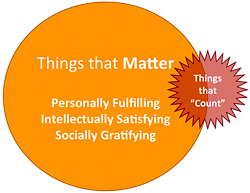

How to Spend Your Time
The most important decisions you make are how to use your time. Use your time in a way that reflects your values.
Deciding what you value is a difficult and important question, and I can’t presume to tell you what the answer should be for you. I do believe, though, that everyone who becomes a professor in an endless golden-age field shares at least these three core values:
People matter. It is rewarding and gratifying to do things that have a positive impact on other people, and painful to do things that are harmful to other people.
Knowlege matters. The future should be better than the present, just like the present is better than the past. The vast majority of human lives have been massively improved by scientific and technological progress. Contributing to and sharing that progress is a worthy and noble endeavour.
Freedom matters. Being able to do, say, and think what you want is valuable and important, as is empowering and enabling others to be free.
Once you figure out what you value, you should aim to spend your time in ways that are consistent with those values, both in the short-term and long-term.
How to Snub “Work-Life Balance”
You’ll hear advice from many people on how to achieve Work-Life Balance1, but “Work-Life” balance is a ridiculous goal!
You shouldn’t aim to balance work and life. Your life is everything. The only thing that matters is your personal mental and physical health and that of your family and close friends. You should aim to make your work a fulfilling and meaningful part of your life, not something to balance against it.
Elon Musk
Some people have to make difficult life-work decisions: generals, presidents, and certain others think their jobs are so important they need to also. If you think that extra hour a week you could spend working on your research instead of with your family will enable you prove P != NP it may be justifiably hard to decide whether it is worth the risk that you’ll miss your daughter’s first encounter with a base case, but fortunately I’m not smart enough to have to worry about that (and probably you aren’t either).
Philip Greenspun
The conclusion to draw from this, though, is not that you shouldn’t work at all, but that you should do work only insofar as it contributes to your life. For most people, this should mean doing work that is beneficial for your personal fulfillment and self-respect as well as for making your family proud to be related to you, and to hopefully be the role model you want for your children.2
How Much Should You Work
To most of humanity, work is the stuff you do solely because if you didn’t your employer might fire you. By this definition, as a professor you should aim to work no more than 10 hours a year, and ideally reduce that number to zero if possible.
For me, the main work I do each year is filling out the asinine annual report forms our school requires. There are two separate forms to submit for this. The first is a painfully long Word document that requires fitting lots of text into strangely formatted boxes to answer awkwardly-posed questions that reflect poorly on the Dean’s values and competence (e.g., “List courses in which you incorporated new teaching techniques (e.g., inclusion of computing, use of multimedia equipment, etc.)“) as well as a final page meant to quantify one’s value by counting things like “Copyrighted software”.
Tom Magliozzi
The second is a one-page form where you have to self-rate yourself according to a rubric that has been plainstakingly devised by an endless series of committees. As an example, here’s the teaching rubric:
Note that the teaching rubric doesn’t include even a single item that has anything to do with the faculty member is actually doing anything that contributes to students actually learning, but the only thing one needs to do to move up from “Does Not Meet Expectations” to “Partially Meets Expectations” is to cancel classes! Happily, this is enough to be satisfactory as far as the school is concerned, so as long as faculty notice the rubric with at least two classes left in the semester in time to cancel them, there is no risk of obtaining an unsatisfactory teaching rating.
Filling out these forms takes about 4-10 hours of soul-crushing work to complete. More principled faculty than me refuse to fill these in, but since faculty who fail to submit them are not considered for raises, it seems worth it to me to cynically spend the time it requires each year to do this. The suffering it involves is at least somewhat balanced by the realization that I have to do this for a few hours each year, but many people have jobs where their entire job is doing similarly soul-crushing work!
Aside from filling in the annual report for the school, the other main work I do each year is financial administration and reporting for my research grants. I avoid as much as possible grants with high administrative requirements (such as those from DARPA or IARPA), so this typically requires only a few hours per year (about an hour per $100,000 spent, which seems pretty reasonable, and the financial administration staff in our department does a great job of taking care of most of the hard parts).
How to Spend the Rest of Your Time
Other than the 10-20 hours per year that you have to work, for the rest of your time you have essentially complete freedom how you spend it. That freedom comes with some obligation to spend your time in ways that benefit humanity, but very few other constraints or obligations. This is one of the best things about being a professor, but is something very few faculty seem to take much advantage of.
 Tenure-track faculty often complicate things by thinking there is a dilemma between spending time on “things that matter” and “things that count” for getting tenure. Contrary to what many new faculty believe, there is no secret list of “countable” things that is hidden in a deep corner of Tenureville (at least, if there is, I haven’t yet reach a sufficient depth to gain access to it).
Getting tenure is just about convincing 12-25 people who have it that you deserve it. Fortunately, most of those people should have values that are well-aligned with yours, so if you focus on doing things that matter well that should be enough for them. The others are either people who feel like they endured a certain amount of suffering doing silly things to get tenure so want to make sure everyone else does (in other domains this is called hazing), or administrators whose values may have been corrupted by many years away from paradise. You should hope that such people will be convinced by the others, or at least, won’t have power over them. But, rest assured that even if you don’t get tenure, if you’ve focused on things that matter you will have plenty of good options of other things to do.
How to Be Mediocre (Not!)
It natural to think there is a linear relationship to the amount of energy expended on something and the quality or value of the result, but the reality is much different. For most things professors do, it looks something like this:
It takes a farily minimal amount of effort to cross the threshold of non-embarrassment, but effort beyond that if unlikely to create much added value, until really significant energy is put into something to reach the level of observably extraordinarinary. For many tasks, its not even clear if extra effort improves value for most of the middle range.
So, to manage your time most effectively without risking embarrassment, you should do enough to just cross the threshold of non-embarrassment for all but the tasks you are most passionate about, and reserve all the energy you can to devote to those.
Ideally, you would avoid taking on any tasks that you don’t feel strongly enough about to want to reach the pinnacle of extraordinariness. But, you may take on more than you end up having time for and have to triage. In such cases, much better to identify one thing to reach for extraordinariness on and just aim to cross the non-embarrassment threshold on everything else, rather than to end up doing everything in a mediocre way. It is also the case that even tasks that you feel strongly about (e.g., teaching) are often composed of several subtasks, many of which are neither exciting nor terribly important (e.g., grading) but can be huge time-killers if you get trapped striving to move through the trough of mediocrity. Focus on the subtasks you care most about and are uniquely able to contribute to, and aim do the rest at just about the embarrassment level.
How to Manage Time
The best advice I’ve seen on time management is Randy Pausch’s lecture (see Gabe Robins’ site for more background on Randy):
I don’t have much to add to Randy’s talk, which I would encourage everyone to watch, but mention a few specific things I’ve learned below.
How to Avoid Telephone Interruptions
Don’t have an office telephone.3
How to Schedule and Be Scheduled
One of the most essential but hardest things to do is to rigorously block off time for important things. If you start with a blank calendar, and fill it up with meetings, leaving the remaining time for important stuff, there is a big risk that you end up with no time left for anything important.
You should instead start by putting all the really important things on your calendar:
- Family time.
- Time to exercise.
- Time for reading, thinking, and creating.
- Time for fun/relaxing.
Block our real entries on your calendar with as much time as you need for these, and treat them like real appointments. You might need to reschedule them occasionally, but don’t just cancel them to make room for inessential meetings!
J.K. Rowling
Then, schedule your classes, meetings with students, research meetings, and with anytime leftover, any other meetings you think are more worthwhile than having extra time for family or thinking.
I’ve found it useful to ask all of my research students to respond to a whenisgood.net request to provide me their regular schedule, and use this to schedule both regular and irregular meetings.
How (and Why) to Take Vacations
Unlike “real” jobs, as a professor you can effectively take as much vacation as you want, whenever you want (except when you have classes to teach). Despite this, most professors seem to never or rarely take vacations.
If you suffer from this, the way to get over it is to realize that your main goal as a researcher is to come up with one or two good ideas a year, and a great idea every decade. You are much more likely to come up with those good-great ideas if you are relaxed, in a new environment, and having time to daydream, sleep well, and have new experiences, than if you are stressed out in your office trying to appear productive.
The main reason most professors don’t take enough vacations is because of the excessive fear they have that while they are vacationing, their rivals will be working hard so by vacationing they are putting the career at a disadvantage and if they are choosing problems to work on foolishly, perhaps even putting themselves in danger of being scooped.
The solution to this is to make everyone take vacations. The Puritans accomplished this by imposing fines and whippings on anyone caught working on the sabbath, but such penalties are hard to enforce today.
New Haven code of laws, quoted in The Sabbath in Puritan New England
To allay any guilt you might have just taking vacations for their own sake, I encourage you to observe important these universal holidays: Public Domain Day (1⁄1), One-Two-Three Day (1⁄23), Doubling Day (1⁄24), ⌊π⌋ Day (3⁄14), Post-Patrick’s Day (3⁄18), Qualification Day (nationality-dependent), Bitcoin Pizza Day (5⁄22), Pau Day (6⁄10), Alan Turing Day (6⁄23), ⌊τ⌋ Day (6⁄28), ⌈τ⌉ Day (6⁄29), Nikola Tesla Day (7⁄10), Wends’ Day (after most Tuesdays), Danny Lewin Day (9⁄10), Norman Borlaug Day (9⁄12), Talk Like a Pirate Day (9⁄19), Randy Pausch Day (10⁄23), Dennis Ritchie Day (10⁄30), Grace Hopper Day (12⁄9), and Isaac Netwon Day (12⁄25).
- This website is based on a talk I first gave at the Doctoral Colloquim at USENIX Security Symposium 2014 which was followed by a panel on “Work-Life Balance” (which ran until after 9pm on an evening during the conference). Of the three panelists, two advocated for the “don’t have a life” and questioned the premise of the panel. The third, thankfully, was at least somewhat on the fence about having a life being a good thing, but early enough in her career to be unsure how compatible this was with being a professor. [return]
- In some countries, it may also be necessary to work to generate enough income to provide for your family’s subsistence and basic needs. It is probably not necessary to work at all to do this, though, in semi-developed countries like the United States (and certainly not in fully-developed countries like Canada) that are rich and moral enough to provide basic nutrition, shelter and adequate health coverage to all their citizens. [return]
- Actually getting rid of ones office phone is harder than you might think, at least at my university. I tried for several years to officially have my phone removed and save the University from having to pay for it, but failed to make any headway on this, and eventually gave up and just put the phone in a file cabinet. This worked for a few years, but a recent horrendously expensive university-wide effort to upgrade phones to use VoIP, led to me being asked several times what kind of new tethered phone I wanted in my office. Despite stating I didn’t want one, someone snuck one into my office last week, and now the department is paying several hundred dollars a year for me to keep it in my file cabinet. [return]